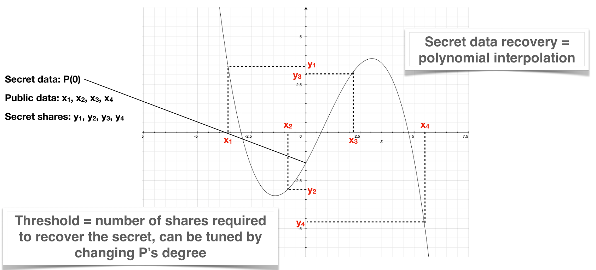

Introduction
Welcome to the documentation site for our Secure Storage Software : Qasmat.
This documentation provides information on how to install and use the software along with explanations on its security features and how it works.
Installation
To be modified depending on what we will give to the user
Add the possibility to give the configuration file
You can generate the docker image of proxy_server or storage_server with the Dockerfile provided.
make sure that you are in LINCOS folder, where the Dockerfile can be found. Make sure that Docker Engine is installed on your machine.
- Start ssh agent and load your private key.
eval $(ssh-agent)
ssh-add ~/.ssh/id_rsa
- Build docker image with the desired arguments. Allow some time, the project will be compiled too.
proxy-server-testis the name of the image.
docker buildx build -t proxy-server-test --progress=plain --build-arg="SERVER=proxy_server" --build-arg="PLAYER=Alice" --build-arg="SFLAG=" --build-arg="SNAME=" --ssh default=$SSH_AUTH_SOCK .
- Run image in a container.
proxyis the name of the container.
docker run -it --rm --name proxy proxy-server-test
Configuration
Each server (proxy or storage) can be launched with the configuration by default or a custom one.
Default values
Here are the default values :
- discovery : local
- network security : public
- encryption_and_kms : None
- web port : fixed 3000
- web address : 0.0.0.0
- max file size : 52428800 bytes (50 MiB)
- allowed cors origins : * (allow everything)
- checking_interval: 1 day
- renewal_duration: 15 days
- expiry_duration: 30 days
- proxy_reconnection_interval: 30 seconds
However it is possible to write a custom configuration.
Proxy
{
"discovery_mode":"Local" or {"Remote": {"proxy_port": <port>}},
"network_security_configuration":{
"network_security":"Public" or {"Private":{"path_to_preshared_key":"<path to key>"}},
"encryption_and_kms": (optional) ["AES" or "OTP", "address":"<address of the kms>","port":<port of the kms>]
},
"web_configuration":{
"bind_port":{"bind_port":{"Fixed":<port>} or "Auto"},
"bind_address":"<address>",
"max_file_size": <positive number>,
"allowed_cors_origins": ["*" or <list of allowed origins>]
},
"time_keeper_configuration": {
"checking_interval": {"secs":<number of seconds>,"nanos":0},
"renewal_duration": {"secs":<number of seconds>,"nanos":0},
"expiry_duration":{"secs":<number of seconds>,"nanos":0}
}
}
Storage
{
"discovery_mode":"Local" or {"Remote": {"proxy_address": "<address>", "proxy_port": <port>}},
"network_security_configuration":{
"network_security":"Public" or {"Private":{"path_to_preshared_key":"<path to key>"}},
"encryption_and_kms": (optional) ["AES" or "OTP", "address":"<address of the kms>","port":<port of the kms>]
},
"proxy_reconnection_interval": <number of seconds>
}
Value descriptions
The pre-shared key is 32 bytes of random data written in base16.
Can be produced with openssl rand -hex 32
What is Qasmat ?
Qasmat is a distributed secure storage software. It is based on the protocol Lincos itself based on Shamir's secret sharing scheme.
Shamir's Secret Sharing is a cryptographic method that allows a secret to be divided into multiple shares. The secret can only be reconstructed when a certain number of these shares are combined together. This is done by creating a polynomial where the secret is a point on the graph, and shares are other points. To reconstruct the secret, a minimum number of shares are used to recreate the polynomial thanks to Lagrange's interpolation. This method ensures security as long as the number of shares combined is less than the threshold.
Lincos is a protocol which includes a secret sharing scheme such as Shamir's which ensure confidentiality of data at rest. The protocol also describes how to manage confidentiality in transit, integrity and authentication to achieve long-term unconditional security.
Finally, Qasmat is an implementation of this protocol in Rust. It is composed of two programs :
- The proxy : It interacts with the user via its API, implement Shamir and Lagrange's algorithms, handles integrity proofs, etc.
- The storage : They respond to requests coming from the proxy server by storing or retrieving shares in their database.
The math behind
Imagine having to draw a line passing through one point, there is an infinity of possibilities for that line. However, if two distinct points are required, one and only one line is now possible. This very simple idea is at the heart of Shamir's secret sharing and Lagrange's interpolation around which Qasmat is built.
The line is replaced by a polynomial of degree k-1 whose value in zero is the secret to protect and other coefficients are chosen randomly. Then at least k distinct points of this polynomial are distributed on distant servers.
To recover the secret, at least k points of the polynomial are retrieved from different servers and the polynomial is built with Lagrange's interpolation (visualization here). Finally, P(0) is calculated which correspond to the secret.

The number of points distributed (n) must be greater than k. Both values constitute a threshold (k,n) whose value is determined according to the security required (see Security at rest).
Last thing : because coefficients are integer, everything is modular. The modulus is a prime number which avoid some basic attacks.
Journey of a file
First, the file is sent via HTTP/HTTPS from the user's browser to the proxy server. Then, because of the modulus in all the calculations, the file is split into chunks of size smaller than the modulus : the parts. Each part goes through Shamir: n shares are produced. When enough shares are ready to be sent to a specific storage, the communication module trigger a request-response exchange with the storage server.
+----------------+
| |
| User's browser |
| |
+---------+------+ +-------------+
| | |
|HTTP/HTTPS | Storage 1 |
+--+--------------------------------------------------+ | |
| | Proxy server | +------^------+
| | +---------+ | |
| | Share 1,1 |Share 1,1| | |
| | +-------> ... |... +-+----------+
| v | Share 1,n |Share p,1| | +-------------+
| Part 1 +---------+ | | |
| File ------> ... ... -+-------> Storage ... |
| Part p +---------+ | | |
| | Share p,1 |Share 1,n| | +-------------+
| +-------> ... |... +-+----------+
| Share p,n |Share p,n| | |
| +---------+ | |
| | +------v------+
+-----------------------------------------------------+ | |
| Storage p |
| |
+-------------+
Once all part are handled, a description of the file is stored on the proxy server with all required information.
Security
Add security in transit
The following chapters present the security features of the software.
At rest
The secret file is distributed over the network of storage servers with a threshold (k,n) :
- k : the number of shares required to rebuild the secret
- n : the number of shares distributed (>=k) This threshold offers two main security features :
Redundancy
Because n can be greater than k, a secret can be retrieve even if some storage servers are unavailable. For example a secret stored with threshold (3,5) : the information of only 3 servers is required which means that if 2 servers are unavailable, the secret can still be reconstructed !
Confidentiality against mobile adversary
The threat here is an adversary that gains access to less than k storage servers in a given time. The scheme ensure that it will get no information about the file in this given time. The shares are renewed on a regular basis to avoid the adversary to gain access to more than k servers and thus be able to retrieve the file. For example if a secret is stored with threshold (3,5), an adversary reading the content of 2 storage servers won't have any information on the secret file.
API
The communication between the user and the proxy server is done through this REST API. It is specified like this :
| Endpoint | Request type | Fields to supply (if any) | Description | Response type (see skeleton below) |
|---|---|---|---|---|
| /api/storage | GET | None | Returns the list of connected storage servers | servers: String[] |
| /api/file | GET | None | Returns the list of currently protected files | files: File[] |
| /api/file/protect | POST | - threshold (number): number of parts- file (file): the file to protect | Protects a file | null |
| /api/file/retrieve | POST | - name (string): the filename | Retrieves a file | File data as a stream of bytes |
| /api/file/remove | POST | - name (string): the filename | Removes a file | null |
JSON response skeletons :
Valid (except for /api/file/retrieve)
{
"code": number,
"status": "string",
"data": any // depends on the request, see Response type in the tab
}
Invalid, error, ...
{
"code": number,
"status": "error",
"message": string
}